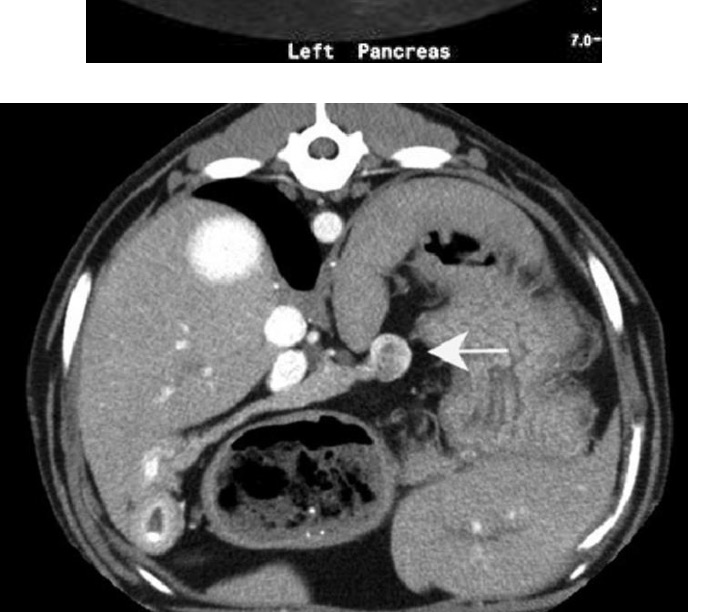
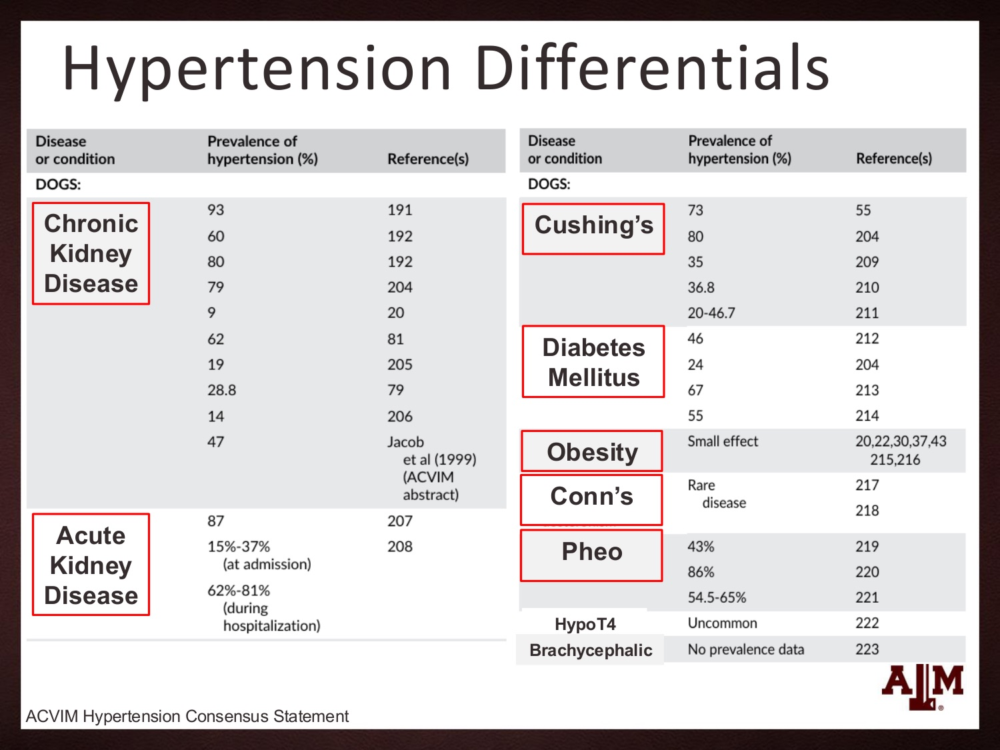
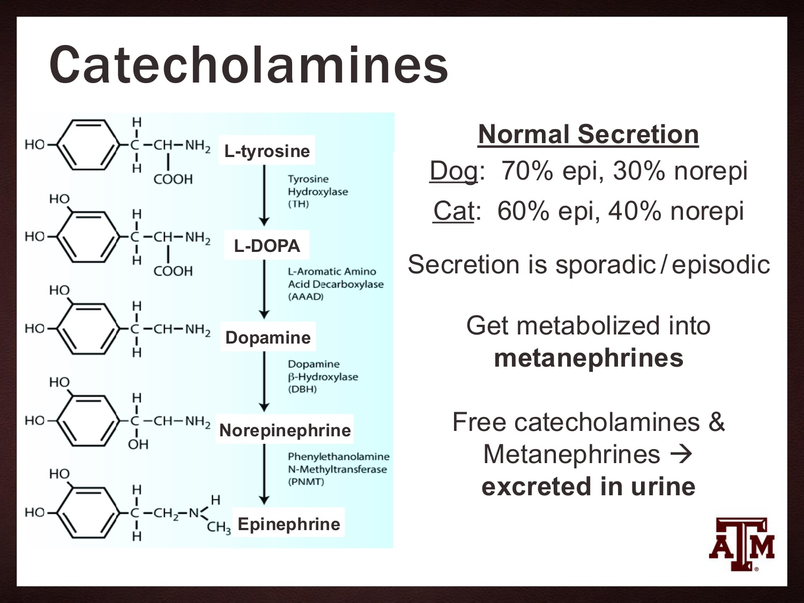
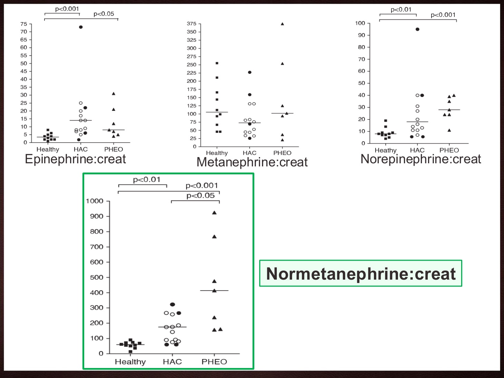

內分泌腫瘤：胰島素瘤與嗜鉻細胞瘤
主講：Andrew Bugbee, DVM, DACVIM｜Texas A&M 首席醫療長（CMO）、臨床教授
2026 年 10 月 8 日｜VET-KU × Texas A&M 內科研討會｜場次 15
🎧 聆聽課堂錄音（Plaud）↗
資料來源標記：
投影片（頁碼為 PDF 頁數）
🎤 課堂逐字稿
✍️ 筆記 上課筆記
💡 補充 整理者補充（機轉、交叉參照）
【更正】 逐字稿轉文字錯誤，以講義為準（完整列表見最後一節）
⭐ 必記原則
- 副腫瘤性低血糖不等於胰島素瘤；也可能是分泌 IGF 的非胰島細胞腫瘤
- 胰島素瘤一律當惡性：診斷時約 50% 已轉移
- 症狀是陣發性的，常在飯後加重；血糖正常一次不能排除
- 急診看到低血糖：先抽血清，再推葡萄糖
- 葡萄糖從低劑量開始、慢慢給，症狀一停就停；目標是沒症狀，不是正常血糖
- 超音波常看不到胰島素瘤，顯影 CT 才是首選影像
- 內科：少量多餐（4–6 餐）、避免單醣、prednisone、toceranib
- 有轉移仍值得手術：切掉原發腫瘤，術後血糖比較好控制
- 嗜鉻細胞瘤：血壓正常不能排除；血壓越高越要懷疑
- 尿 normetanephrine:creatinine 最能和庫欣區分，但仍有重疊
- 先 α、後 β：α 阻斷劑至少 3 天後才加 β 阻斷劑
- 術前 α 阻斷沒有改善存活，美國多數醫院已改為盡快手術
核心觀念與總覽
▾🎤 場次資訊
- 講者：Andrew Bugbee（DVM, DACVIM），Texas A&M 首席醫療長、臨床教授。也是 06 糖尿病營養、09 肥胖與減重、13 庫欣監測與替代療法 的講者。
- 🎤 這是當天早上臨時調整的場次，接下來是 Tardo 的「糖尿病合併庫欣的狗」。
- 🎤 整場用兩隻狗串起來：Rambo（胰島素瘤，兩週前在 Texas A&M 看的病例）和 Arthur（嗜鉻細胞瘤，講者在 University of Georgia 時的病患，「這輩子最喜歡的病患」）。最後補充升糖素瘤。
💡 補充 三種腫瘤一覽
| 胰島素瘤 | 嗜鉻細胞瘤 | 升糖素瘤 | |
|---|---|---|---|
| 來源 | 胰臟 β 細胞 | 腎上腺髓質嗜鉻細胞 | 胰臟 α 細胞 |
| 過量激素 | 胰島素 | 兒茶酚胺（多為正腎上腺素） | 升糖素 |
| 主要問題 | 低血糖 | 高血壓、心搏過速 | 糖尿病、肝皮症候群 |
| 確診檢查 | 低血糖時的胰島素／血糖比值 | 尿 normetanephrine:creatinine | 血漿升糖素 |
| 首選影像 | 顯影 CT | 超音波／CT（評估血管侵犯） | 影像找胰臟腫塊 |
| 首選治療 | 部分胰臟切除 | 腎上腺切除 | 手術切除 |
💡 補充 與其他場次的關聯
- 胰島素生理、GLUT-2 與葡萄糖感知：見 02 犬糖尿病與胰島素。
- 腎上腺腫塊、FNA、尿 metanephrine 收集方式：見 14 座談會 Q&A 第 3 題（Bugbee 已先講過一次）。
- 嗜鉻細胞瘤常被誤認為庫欣；腎上腺腫瘤懷疑庫欣時用 LDDST：見 12 犬庫欣氏症：診斷與內科治療。
- 升糖素是胰島素的「邪惡表親」、會造成胰島素阻抗：見 09 肥胖與減重 的升糖素段落。
1. 病例 Rambo 與低血糖鑑別
▾🎤 Rambo：12 歲已結紮公犬，拉布拉多
- 主訴：在家突然倒下，之後多次癲癇，飼主緊急送到 Texas A&M 急診。
- 檢傷：TPR 正常；側躺、意識遲鈍；全身細微肌肉顫抖，臉部疑似局部性癲癇。🎤 急診團隊當時不確定是神經性還是代謝性。
- 觸診：前腹部器官腫大。🎤 輕度，研判可能是肝腫大，當時不擔心。
- 緊急檢查：血糖機（AlphaTrak 3）測得 24 mg/dL，重度低血糖；ALP 上升；尿蛋白 1+；USG 1.043，濃縮能力正常。
🎤 低血糖的鑑別診斷
| 類別 | 原因 | Rambo 的評估 🎤 |
|---|---|---|
| 假性 | 血液未離心、放太久才分析 | 24 太低，不像假性；而且是馬上用血糖機測的 |
| 消耗增加 | 紅血球增多、類白血病反應、敗血症、副腫瘤 | 最擔心的類別，尤其是副腫瘤 |
| 生成減少 | Addison／皮質醇低下、肝合成衰竭、極度長期飢餓、新生或幼齡 | 肝功能檢查不支持肝衰竭；一直正常進食；不是幼犬。Addison 當時還沒完全排除 |
| 醫源性 | 外源性胰島素 | 家中沒有胰島素 |
| 中毒 | 木糖醇 | 沒有接觸史 |
🎤 副腫瘤性低血糖：不等於胰島素瘤
- 胰島素瘤：β 細胞腫瘤，是副腫瘤性低血糖最常見的原因。
- 非胰島細胞腫瘤：
- 平滑肌肉瘤：🎤 可能是最常見的非胰島細胞腫瘤，多在腸胃道。影像除了找轉移，也要確認腹腔裡沒有其他腫瘤。
- 肝腫瘤、肝細胞癌。
- 多種器官的上皮癌。🎤 尤其是乳腺。
- 腫瘤負荷很大，例如淋巴母細胞性白血病。🎤 機制和紅血球增多症類似：細胞越多，吃掉的葡萄糖越多。
- 🎤 腫瘤分泌的不一定是胰島素，也可能是類胰島素生長因子（IGF），一樣會造成低血糖。診斷時要記得這一點。
💡 補充 非胰島細胞腫瘤主要分泌 IGF-2，這時血中胰島素是被抑制的（偏低）。所以「低血糖但胰島素也低」會把方向導向非胰島細胞腫瘤；「低血糖但胰島素正常或偏高」才指向胰島素瘤。
2. 胰島素瘤：流行病學、腫瘤行為與症狀
▾🎤 流行病學
- 雪貂遠多於犬。🎤 小型哺乳類獸醫最常看到，雪貂是這個病的代表動物。貓非常罕見，所以實務上幾乎都是狗。
- 中年到老年，平均約 9 歲。
- 中大型犬遠多於小型犬。🎤 不代表 Maltese 不會發生，但典型就是像 Rambo 這樣的拉布拉多體型。
- 80% 是單一腫瘤，生長緩慢。
🎤 一律當惡性：轉移與存活
- 診斷時約 50% 已經可以偵測到轉移。🎤 通常先到區域淋巴結和腹腔，肺和肝也是早期常見轉移部位。
| 分期 | 治療後中位存活期（MST） |
|---|---|
| 只有胰臟腫塊，沒有轉移 | 約 785 天 |
| 胰臟腫塊＋淋巴結轉移 | 約 547 天 |
| 胰臟腫塊＋遠端轉移（肝、肺等） | 約 217 天（不到一年） |
🎤 臨床症狀：陣發性，而且飯後加重
- 🎤 胰島素是從腫瘤陣發性分泌的，所以症狀也是一陣一陣的，很像胰島素過量的病患。
- 全身無力、嗜睡、常常躺著。
- 運動失調、定向感混亂。
- 運動不耐：🎤 不太想起來跑、玩丟接球。
- 食慾增加，可能伴隨體重增加。🎤 血糖下降時，神經系統會正常地刺激食慾來補充葡萄糖，所以會有找食物的行為。有報告指出，診斷前長期低血糖的動物常常變胖。
- 肌肉抽動、顫抖：🎤 就像 Rambo，可能被誤認為局部性癲癇。
- 虛脫、癲癇。
- 大餐後症狀常加重：🎤 一天餵一兩次的狗，正常份量的一餐就足以刺激過量的胰島素分泌。
3. 診斷：胰島素／血糖比值與影像
▾🎤 基本檢查
- CBC、生化、UA：低血糖可能非常嚴重（<30 mg/dL）。🎤 Rambo 在 24 還活著，講者覺得很驚人。
- 其他項目常常沒有異常，主要用來排除敗血症、紅血球增多症、肝衰竭等。
- 狗可能間歇性血糖正常：腫瘤是陣發性分泌胰島素。🎤 如果狗在家反覆嗜睡、到急診時血糖剛好正常，鑑別診斷一開始可能就不會列入胰島素瘤。
- 懷疑很高時，可能要禁食並連續測血糖，等症狀出現、記錄到低血糖。
🎤 正常的胰島素調控
- 主要由門脈血糖調控：β 細胞上的 GLUT-2 持續取樣門脈血糖，經由「葡萄糖感知」決定分泌多少胰島素。
- 正常血糖約 80–120 mg/dL，此時胰島素分泌很少。
- >110 mg/dL 時胰島素分泌增加；<60 mg/dL 時應該完全不分泌。
- 🎤 所以血糖 24 的 Rambo，體內應該沒有任何胰島素在分泌。
🎤 確診：胰島素／血糖比值
- 正常狗低血糖時應該測不到胰島素。低血糖卻有正常或偏高的胰島素，就是不正常的生理反應。
- 並非胰島素瘤特有：其他會分泌胰島素的腫瘤也會這樣。
- 一定要在低血糖時（<60 mg/dL）、給葡萄糖之前採樣。🎤 沒有低血糖會影響比值，可能造成偽陰性。
比值 = 血清胰島素（μU/mL）× 100 ÷（血清葡萄糖（mg/dL）− 30）比值 > 30：可能是分泌胰島素的腫瘤。血糖 < 30 mg/dL 時，分母用 1。
- 🎤 大多數參考實驗室會幫你算好。
🎤 講者說最常見的錯誤：急診一看到血糖 24，第一個動作就是去拿葡萄糖。一開始推葡萄糖，就沒辦法做胰島素／血糖比值了。所以採樣要快，才能盡快給葡萄糖又不影響診斷。
💡 補充 這個公式就是「校正胰島素／血糖比值」（AIGR）。分母減 30 會在血糖很低時把比值放大，敏感度高但偽陽性也多。很多人也直接判讀：血糖 <60 時，胰島素落在參考範圍中上段或偏高，就算不恰當分泌。
🎤 影像學：CT 才是首選
- 腹部超音波：🎤 雖然現在很容易取得，但不是首選。除非胰臟病灶夠大，否則很少看得到。看不到胰臟腫塊不能排除胰島素瘤。超音波的用處是排除腸胃道、肝臟等非胰島細胞腫瘤，以及找轉移。
- 胸腔 X 光：找肺轉移。🎤 老年動物本來就會做一般轉移檢查，而胰島素瘤診斷時可能已有肺轉移。
- 顯影 CT：🎤 首選。找胰臟內有顯影增強的腫塊，偵測腫塊和全身轉移都比超音波敏感。

4. 治療原則、急救與採樣時機
▾🎤 治療原則：做到剛好就好
- 內科治療：適合初期穩定，尤其是準備送手術的病患。🎤 一開始可能都有反應，但效果短暫，之後會產生抗性、症狀變嚴重；MST 也比手術短。
- 手術切除（部分胰臟切除）：首選，存活較長，術後血糖較好控制。
Do just enough to stop / prevent clinical signs. Don't overdo it!做到剛好足以停止或預防症狀就好，不要過度。給太多葡萄糖會刺激腫瘤分泌更多胰島素，讓症狀更嚴重，形成惡性循環。
🎤 低血糖急救
| 步驟 | 做法 |
|---|---|
| 50% 葡萄糖推注 | 一般劑量 0.25–1.0 mL/kg，至少 1:4 用生理食鹽水稀釋後 IV。0.25 mL/kg 約可使血糖上升 ~50 mg/dL。 🎤 胰島素瘤病患要從低劑量開始，有時甚至低於 0.25 mL/kg。 |
| 給法 | 緩慢輸注，神經症狀一改善或癲癇一停就停，避免衝過頭。 |
| CRI | 推注穩定後，點滴中加葡萄糖到 2.5–5%。1 L 點滴加 50 mL 的 50% 葡萄糖約為 2.5%。 🎤 超過 5% 對胰島素瘤病患有點冒險，而且要放中心靜脈導管，避免高濃度葡萄糖造成靜脈炎。 |
| 升糖素 | CRI 10–15 ng/kg/min。🎤 通常不需要；用在對葡萄糖補充有抗性的嚴重副腫瘤性低血糖，可誘發胰島素阻抗，讓葡萄糖更有效。 |
🎤 懷疑胰島素瘤時：採樣時機
- 要做胰島素／血糖比值，必須在給葡萄糖之前，而且病患正處於低血糖（<60 mg/dL）時抽血。
- 🎤 只要有一點點懷疑，急診就先抽這管。抽生化時多抽一點，剩下的血清就能拿來送驗。
- 🎤 狗正在癲癇而先給了葡萄糖，不是世界末日，先穩定病患沒關係。之後要診斷時，停掉葡萄糖、等血糖再降下來，再抽血送胰島素／血糖比值。
5. 長期內科治療與藥物
▾🎤 飲食與類固醇
- 飲食：不要一天一兩大餐，改成 24 小時內多次少量。🎤 一天 4–6 餐最理想。高蛋白、高脂肪、複合碳水化合物，避免單醣。🎤 多數獸醫會選糖尿病處方飼料或高纖飼料。
- Prednisone／prednisolone 0.5–2 mg/kg/day PO：誘發胰島素阻抗、增加肝臟糖質新生。🎤 通常從低劑量開始，往上調到能控制血糖的劑量。
- 🎤 再提醒一次：目標不是正常血糖，而是不會引起低血糖症狀的血糖。
✍️ 筆記 避免單糖，因為會促使胰島素分泌
💡 補充 胰島素瘤細胞不是完全不理會血糖。它在低血糖時仍會自主分泌胰島素，但血糖一升高，它還是會反應，而且常常比正常 β 細胞更強。所以吃單糖會造成這樣的循環：
單糖快速吸收 → 血糖急升 → 腫瘤大量釋放胰島素 → 血糖急降、甚至低於進食前（反彈性低血糖）→ 出現症狀
- 這和 p.8 大餐後症狀加重、p.15 葡萄糖症狀一停就停是同一個機制。
- 高蛋白、高脂肪、複合碳水化合物吸收慢，血糖曲線平緩；少量多餐也是為了不讓血糖大起大落。
- 飼主衛教：避免零食、餅乾、含糖食物。發作時可以在牙齦塗少量糖漿救急，但狗能吃東西後要盡快餵正餐並就醫，不能長期靠餵糖維持。
🎤 藥物治療
| 藥物 | 機轉 | 講者評價 |
|---|---|---|
| Toceranib（Palladia） | 酪胺酸激酶抑制劑 | 首選。2.4–2.9 mg/kg PO q48h，或一、三、五給藥（方便飼主）。合併飲食和類固醇時 MST 656 天，66.7% 完全、部分緩解或疾病穩定（Olivares 2022）。 🎤 存活期和「沒有轉移」的分期差不多，相當好。腫瘤科最推薦的就是它，「在我手上是最有效的選項」。 |
| Diazoxide | 打開 K⁺ 通道 → β 細胞過極化 → 鈣流入減少 → 胰島素分泌減少；也增加兒茶酚胺釋放，造成輕度胰島素阻抗 | 🎤 傳統用藥。效果不穩定、腸胃副作用很多，Palladia 上市後已經不太用。 |
| Octreotide | 體抑素類似物 | 效果不一、不可靠。🎤 價格也是問題。 |
| Streptozocin | 烷化劑，結構像葡萄糖，經葡萄糖感知進入 β 細胞後殺死細胞 | 副作用多，不建議。🎤 β 細胞被殺掉，常常因此發生糖尿病。 |
6. 手術、預後與 Rambo 的結果
▾🎤 部分胰臟切除術
- 通常是單一病灶：質地硬的球狀結節，多數 <3 cm。
- 不太可能根治：幾乎 100% 有微小轉移（至少到區域淋巴結）。🎤 講者從不讓飼主期待這是可以治癒的病。
- 有轉移仍需要手術：看得到的轉移灶能切就切；就算切不完，切掉原發腫瘤也讓術後的內科控制容易很多。
🎤 預後
MST > 1 年
- 接受手術
- 術後幾乎沒有症狀
- 沒有轉移，或只轉移到區域淋巴結
MST < 1 年
- 只做內科治療
- 手術後仍持續低血糖、有症狀
- 有遠端轉移
🎤 最糟的情況是做了手術、術後還是低血糖有症狀：飼主花了很貴的手術費，卻仍落在預後最差的那一端。
🎤 Rambo 的結果
- 幾天後拿到胰島素／血糖比值：159（參考值 <30），強烈支持分泌胰島素的腫瘤。
- 低劑量葡萄糖輸注就止住癲癇。
- 胸腹 CT：胰臟有顯影增強腫塊，沒看到明顯轉移。🎤 但講者懷疑腹腔裡至少已有轉移。
- 飼主無法負擔手術，改為：
- 少量多餐：🎤 依飼主工作安排，一天 4–6 餐
- Prednisone 1.0 mg/kg/day
- Palladia 2.5 mg/kg q48h
- 🎤 講者說不清楚他現在的狀況，希望很好。
7. 病例 Arthur 與高血壓鑑別
▾🎤 Arthur：14 歲已結紮公犬，Bassador（巴吉度 × 拉布拉多）
- 主訴：急性虛脫、陣發性運動失調。🎤 飼主說他有時好像看不見，在家裡迷迷糊糊、會撞到東西。就診約 3 週前流過一次鼻血。
- 身體檢查：心跳 160 bpm。🎤 住院當然會緊張，但對一隻相對放鬆的 Bassador 來說還是偏高。視網膜出血、前腹部器官腫大。
- 緊急檢查：血壓 160 mmHg；ALP、ALT、膽固醇上升，輕度氮血症；USG 1.050，尿蛋白 4+。
🎤 高血壓的鑑別診斷（ACVIM 高血壓共識）

| 疾病 | 犬的高血壓盛行率（表中各研究） |
|---|---|
| 慢性腎病 | 9–93% |
| 急性腎損傷 | 87%；入院時 15–37%，住院期間 62–81% |
| 庫欣氏症 | 20–80% |
| 糖尿病 | 24–67% |
| 肥胖 | 影響小 |
| Conn 氏症（原發性醛固酮增多症） | 罕見疾病 |
| 嗜鉻細胞瘤 | 43%、86%、54.5–65% |
| 甲狀腺功能低下 | 不常見 |
| 短吻品種 | 無盛行率資料 |
🎤 考慮到 Arthur 的病史，最擔心的是嗜鉻細胞瘤。
8. 嗜鉻細胞瘤：兒茶酚胺與腫瘤行為
▾🎤 定義與流行病學
- 具功能性的嗜鉻細胞腫瘤，起源於腎上腺髓質，過量製造兒茶酚胺。
- 犬遠多於貓（貓很罕見）。
- 診斷時平均 11–12 歲，95% ≥ 7 歲。
🎤 兒茶酚胺為什麼造成高血壓
- 腎上腺素和正腎上腺素負責「戰或逃」反應。
- 高濃度時有 α1 + β1 作用：血管收縮、心臟收縮力 ↑、心跳 ↑。
- 結果就是高血壓。
🎤 合成、分泌與代謝

- 正常分泌比例：犬 70% 腎上腺素、30% 正腎上腺素；貓 60%／40%。
- 分泌是陣發性的。🎤 希望你不是整天都處在戰或逃狀態，所以只在壓力時分泌。
- 代謝成甲腎上腺素類（metanephrines），即沒有活性的代謝物，和游離兒茶酚胺一起從尿液排出。🎤 診斷就是利用這個排泄過程。
💡 補充 兒茶酚胺本身陣發性釋放、半衰期很短，直接測容易漏掉；腫瘤細胞內會持續把它代謝成 metanephrines，所以測 metanephrines 比較敏感，也是第 10 節尿液檢查的基礎。
🎤 腫瘤行為
- 多數過度分泌正腎上腺素。
- >90% 單側，另一側通常正常。
- 鈣化很少見。🎤 這點和其他惡性腎上腺腫瘤不同：腎上腺看到鈣化，可以把嗜鉻細胞瘤在鑑別清單上往後排。
- 50% 局部侵犯。🎤 會侵入周圍結構或血管，例如膈腹靜脈，右側則是後腔靜脈。最好用 CT 評估。
- 應視為惡性：可轉移到肝、淋巴結、腎、骨、中樞神經；診斷時 10% 有肺轉移。
【更正】 逐字稿聽起來像是講者說「嗜鉻細胞瘤主要過度分泌腎上腺素」，但講義 p.28 寫的是正腎上腺素，p.34 的數據也是 normetanephrine（正腎上腺素的代謝物）最能區分，所以以講義為準。
9. 臨床表現與高血壓型態
▾🎤 臨床表現
- 高血壓造成的標的器官傷害（最主要）：
- 視網膜出血或剝離、急性失明。🎤 Arthur 在家間歇性迷糊、看不見，研判是視網膜部分剝離或嚴重出血。
- 虛脫、中風、癲癇、意識遲鈍、運動失調。
- 急性腎損傷（或慢性腎病）。
- 鼻出血：🎤 高血壓讓鼻腔血管破裂，造成間歇性流鼻血，就像 Arthur。
- 心搏過速、快速性心律不整。🎤 是零星出現的，不一定剛好抓到。
- 多喝多尿。
- 嗜睡、虛弱、焦慮。🎤 戰或逃反應失控，會顯得坐立不安。
- 休息時呼吸急促、喘氣。
- 厭食、嘔吐、腹瀉、體重減輕。
講義旁註：症狀可能零星或間歇出現，而且大多很模糊。
🎤 四種高血壓型態
🎤 常見誤解：嗜鉻細胞瘤一定持續高血壓或持續心搏過速。實際上有四種表現：
| 型態 | 特點 🎤 |
|---|---|
| 持續高血壓＋陣發性飆高 | 最好診斷：什麼時候量都高，嚴重程度隨分泌起伏 |
| 平時正常＋陣發性飆高 | 最讓人挫折的型態。講者認為 Arthur 就是這一型，所以才會間歇性失明 |
| 持續高血壓 | 輕中度持續偏高，適應環境、不緊張後也不會降；可能沒有器官傷害 |
| 血壓正常 | 測不到高血壓，只能靠標的器官傷害或心臟異常來推測 |
血壓正常不能排除嗜鉻細胞瘤！血壓越高，越可能是嗜鉻細胞瘤。
10. 診斷：檢驗、超音波、FNA 與尿液 metanephrines
▾🎤 一般檢查與心電圖
- CBC、生化、UA 都是非特異性變化：貧血、ALP 和 ALT 上升、USG 低、蛋白尿。
- ECG／遙測監測：心搏過速、快速性心律不整，常是陣發性的。🎤 遙測比較好，比較有機會抓到陣發性分泌；可能看到竇性心搏過速或心室性心律。
- 常被誤認為庫欣：🎤 有腎上腺腫瘤、生化異常、高血壓或蛋白尿，看起來都很像庫欣，有時兩個病要同時判斷。
🎤 超音波
- 單側結節或腫塊，右側 >60%。🎤 很不幸，右側比較容易侵入後腔靜脈。
- 超過一半直徑 ≥ 4.0–5.0 cm。🎤 但也可能是腎上腺內很小的結節。
- 鈣化很少見。
- 腫瘤栓塞很常見，侵入後腔靜脈。🎤 但不代表不能手術，可以切開靜脈把侵入的腫瘤一起取出。
- 對側腎上腺通常正常：🎤 可以和腎上腺依賴型庫欣區分。
🎤 細針抽吸會引發高血壓危象嗎？
講義打了問號：「FNA？會有高血壓危象的風險？」
- 🎤 以前大家很怕抽吸腎上腺腫塊會刺激兒茶酚胺釋放、引發高血壓危象。
- 🎤 現在的證據顯示相當安全。講者團隊常常做，沒有因抽吸而引發危象。
💡 補充 細胞學能分辨皮質還是髓質（神經內分泌）來源，但不能單獨確診嗜鉻細胞瘤（見第 14 節 Q1）。Tardo 在 14 座談會 第 3 題也說，即使 metanephrine 正常，細胞學仍可能顯示髓質腫瘤。
🎤 尿液 metanephrines：首選檢查
- 檢測尿中游離的 normetanephrine 和 metanephrine：> 4 倍參考上限才算支持嗜鉻細胞瘤。
- Normetanephrine:creatinine 比值最有幫助：參考值 37–223 nmol/mmol（🎤 各實驗室不同），嗜鉻細胞瘤犬中位數 523（147–3270）。
- 檢體至少 5–10 mL 尿液。🎤 最好請飼主在一天中收集多次尿液，放冷凍庫保存。
- 保存：
- 酸化（0.15 g sulfamic acid）可穩定 1 週。🎤 有些實驗室會提供加了穩定劑的管子。
- 未酸化就盡快冷凍，可穩定 48 小時。🎤 已證實不一定要酸化，冷凍後 48 小時內送到實驗室即可。
🎤 哪個比值最能區分？

| 指標（:creatinine） | 結果 |
|---|---|
| 腎上腺素 | HAC 和 PHEO 都高於健康犬，兩病重疊大 |
| Metanephrine | 三組幾乎無法區分 |
| 正腎上腺素 | PHEO 偏高，但和 HAC 重疊 |
| Normetanephrine | PHEO 明顯高於健康犬和 HAC（p<0.05），最有鑑別力 |
🎤 但仍有重疊，庫欣犬也可能偏高，結果要小心判讀。
11. 治療與術前 α 阻斷
▾🎤 先 α、後 β
| 藥物 | 講義劑量 | 說明 |
|---|---|---|
| Prazosin（α 阻斷） | 0.5–2.0 mg/kg PO q8–12h | 首選初始治療之一 |
| Phenoxybenzamine（α 阻斷） | 0.2–2.5 mg PO q12h | 首選初始治療之一 |
| Atenolol（β 阻斷） | 0.25–1.0 mg/kg PO q12–24h | 用於持續高血壓或心搏過速；α 阻斷劑 ≥ 3 天後才開始 |
- 🎤 不要先給 β 阻斷劑：用 β 阻斷劑壓心跳，會引起反射性高血壓，讓症狀更糟。先給 prazosin 或 phenoxybenzamine 至少 3 天、讓它發揮作用，再考慮加 atenolol。
💡 補充 更精確的機轉是：β 阻斷後少了 β2 的血管擴張作用，α 受體的血管收縮沒有對抗（unopposed α），可能造成高血壓危象。
💡 補充 劑量單位請自行查證：講義寫 prazosin「0.5–2.0 mg/kg」，但常見參考資料多為每隻犬 0.5–2 mg（mg/dog）。Phenoxybenzamine 講義寫 mg（未寫 /kg），文獻常見 0.25 mg/kg q12h 起始、逐步調到 2.5 mg/kg q12h。開藥前請以 Plumb's 等藥典為準。
🎤 其他降血壓藥
- Amlodipine、telmisartan、ACEi、hydralazine，可能要合併使用。
- 🎤 持續高血壓時，amlodipine 大概是最有效、最可靠的。
- 🎤 Thiazide 和 ACEi 可以用，但降壓效果較溫和，約降 15–20 mmHg。血壓 220 的狗光靠這些不夠。
- 🎤 陣發性飆高的病例最難處理：用藥也許能控制一整天的基礎血壓，但很難預測何時飆高。如果用藥去壓飆高，非飆高時段反而會低血壓。有時只能接受飆高無法完全控制，因為低血壓造成器官傷害和持續高血壓一樣糟。
🎤 腎上腺切除：術前要先用 α 阻斷劑嗎？
- 🎤 腎上腺切除是首選治療。傳統認為術前要先用 α 阻斷劑，這常讓手術延後至少 2 週。
- University of Georgia 的研究（Enright et al.）：53 隻接受腎上腺切除的嗜鉻細胞瘤犬。
- 麻醉中 46/53 隻出現高血壓、16/53 隻出現心律不整。
- 術前用過 α 阻斷劑的犬，術中收縮壓反而高了將近 20%。
- 全部撐過手術，44 隻存活到出院；出院犬 MST 1169 天（3.2 年）；懷疑復發 3 隻、轉移 8 隻。
- 結論：術前 α 阻斷劑和存活改善沒有關聯。
- 🎤 因此美國多數醫院已不再建議術前先用藥，而是盡快手術。
💡 補充 這是回溯性研究，有用 α 阻斷劑的犬可能本來就比較嚴重，各機構做法仍不一致。
12. 預後與 Arthur 的結果
▾🎤 預後
| 腎上腺切除、沒有轉移 | 內科治療 | |
|---|---|---|
| 短期 | 圍手術期死亡率約 13–48%；Grimes 等人約 16% 未能存活到出院 | — |
| 長期 | 最長報告約 4 年；Grimes 等人 MST 3.2 年 | 數月到約 1 年 |
| 死因 | — | 高血壓併發症、腫瘤長大或轉移、腫瘤破裂出血 |
- 🎤 手術且沒有轉移的預後最好，但「還是不算好」。圍手術期死亡率很高，所以診斷後要盡快送手術。
- 🎤 早期報告的圍手術期死亡率高達 48%；Grimes 的研究看較近期的族群，降到 16%。
- 🎤 內科治療沒有好的數據，一般說數月到最多一年。腫瘤也可能長大到破裂，造成腹腔出血而致命。
🎤 Arthur 的結果
- 影像：左側腎上腺腫塊 4 × 4 cm；可能合併慢性胰臟炎。
- 內分泌篩檢（排除腫瘤的其他功能）：
- 總 T4 = 2.8（參考值 1.0–4.0），正常。
- ACTH 刺激：0 小時 2.3、1 小時 14.4，不符合庫欣。🎤 提醒：ACTH 刺激試驗不是腎上腺腫塊犬診斷庫欣的最佳檢查。
- Normetanephrine:creatinine = 683（參考值 <223），非常高，符合嗜鉻細胞瘤。
- 腎上腺切除成功，術前沒有先用 α 阻斷劑，術後狀況良好。
13. 升糖素瘤
▾🎤 犬胰臟 α 細胞的罕見腫瘤
- 貓沒有報告。
- 過量分泌升糖素：🎤 就像糖尿病課講的，升糖素是胰島素的「邪惡表親」。
- 胰島素阻抗 → 糖尿病：多喝多尿、多食、體重下降、厭食、腹瀉、嗜睡。
- 和肝皮症候群有關：黏膜皮膚交界處、腳墊、腹部有病灶；潰瘍處常繼發細菌感染。
- 診斷：臨床症狀、好發族群、皮膚病灶。🎤 看到肝皮症候群樣的病灶，就要去找胰臟腫瘤。影像看到胰臟腫塊，做抽吸或切片；血漿升糖素上升。
- 治療：手術切除；體抑素類似物（octreotide）可減少分泌。
💡 補充 升糖素過多會讓肝臟大量消耗胺基酸去做糖質新生，造成低胺基酸血症，皮膚和腳墊因此壞死，也就是表淺壞死溶解性皮膚炎（SND）典型的腳墊結痂龜裂。靜脈補充胺基酸常有幫助。
14. 課後 Q&A
▾Q1｜無法做尿液檢查時，FNA 可以診斷嗜鉻細胞瘤嗎？
🎤 不足以確診。細胞學可以告訴你比較像上皮癌還是神經內分泌腫瘤；如果是神經內分泌型，會比較支持嗜鉻細胞瘤，而不是皮質的腺癌或腺瘤，但不能當作確定診斷。
Q2｜可以送人醫實驗室驗血漿 metanephrines 嗎？可靠嗎？
🎤 血漿的問題在於陣發性分泌：濃度是暫時的，可能測不到明確升高，得重複檢測好幾次。尿液比較穩定，在膀胱裡「不會跑掉」。如果懷疑很高、血漿卻沒抓到，最好讓病患住院接遙測，在心臟或高血壓發作時採樣，提高測到的機會。
Q3｜影像意外發現腎上腺腫瘤，沒有症狀、血檢也正常，多大要切？
🎤 要看其他目標。任何可能有問題或是癌的病灶，考慮切除都合理。但偶然發現的腎上腺病灶，講者常會1–2 個月後複查：如果變大、改變或侵犯，就更有理由切除；如果沒有變化、狗也沒有症狀，就定期追蹤。沒有在長、摸不到的腫瘤，不急著送手術對病患不算傷害。
Q4｜選擇內科治療、超音波看到後腔靜脈侵犯或腫瘤栓塞，要給 clopidogrel 嗎？
🎤 不手術的話可以考慮，但要看腫瘤大小：大腫瘤可能破裂出血，會比較擔心；小腫瘤應該可以。如果要送手術，先不要給，等術後看狀況再決定。
Q5｜胰島素瘤用高濃度葡萄糖治療，會不會讓神經細胞脫水、引發癲癇，形成惡性循環？
🎤 講者想不到有哪個病例讓他擔心滲透壓造成的體液移動。不處理低血糖症狀本身就是問題。神經組織的體液移動風險主要和慢性程度有關，長期異常再快速矯正才容易造成去髓鞘或細胞體積變化。穩定胰島素瘤病患時，這通常不是他會擔心的事。
Q6｜Palladia 有些狗無法耐受隔天給，只能一三五給；控制不住時要增加頻率還是合併其他藥？
🎤 通常是 Palladia 加類固醇（加飲食）的組合。2.4–2.9 mg/kg 是胰島素瘤研究的平均範圍，低於其他適應症的仿單劑量，所以研究中有些狗用更低的劑量、更低的頻率。用得越久、越有抗性時，常會往上調，例如從一週三次調到每 48 小時一次。講者會先告訴飼主：一開始可能很好，但內科治療終究會控制不住。
Take-home、更正表與參考資料
▾💡 補充 總結
- 胰島素瘤：低血糖時先抽血再給糖；葡萄糖給到症狀消失就停；CT 分期；有轉移仍值得手術；內科以少量多餐、prednisone、toceranib 為主。
- 嗜鉻細胞瘤：血壓正常不能排除；尿 normetanephrine:creatinine 最能和庫欣區分；FNA 相對安全；β 阻斷劑一定在 α 阻斷劑之後。
- 術前 α 阻斷沒有改善存活，趨勢是確診後盡快手術。
- 升糖素瘤：糖尿病合併肝皮症候群樣皮膚病灶時，要想到去找胰臟腫瘤。
【更正】 逐字稿轉文字錯誤對照
| 逐字稿 | 應為 |
|---|---|
| Dr. Bubby | Dr. Bugbee |
| Dr. Tartar | Dr. Tardo（下一場） |
| Rainbow | Rambo |
| Alcontrack 3 | AlphaTrak 3（血糖機） |
| fatty megalie | hepatomegaly（肝腫大） |
| mild elevated albumin | elevated ALP（講義） |
| serum concentration was adequate | urine concentration（USG）adequate |
| hypoparathyroidism（低血糖鑑別） | hypoadrenocorticism（Addison） |
| paraneoplastic hyperglycemia（乳腺癌） | hypoglycemia |
| barbs | ferrets（雪貂） |
| MEMM database | minimum database |
| PG / B24 | BG 24 |
| biotumors | 非胰島細胞腫瘤（other tumors） |
| Lugarn | glucagon |
| severe pancreatic hypopigmentation | severe paraneoplastic hypoglycemia |
| hypovolemic injury（葡萄糖稀釋） | 高張溶液造成的血管傷害／靜脈炎 |
| allow them to become hypovolemic again | hypoglycemic again |
| melphalan / Palidii / paladil / felty / bavandia / gladiol | Palladia（toceranib） |
| inguinal mass（Rambo 的 CT） | pancreatic mass（講義） |
| encephaloma / scleroma / salinomas | insulinoma |
| Rivas / Bas Town | Bassador（巴吉度 × 拉布拉多） |
| episodic anoxia | episodic ataxia |
| apistaxis / apneustaxis / apnea | epistaxis（鼻出血） |
| chromophobe cell tumor | chromaffin cell tumor（嗜鉻細胞） |
| theophylline cytoma / buccal chromosomata / PLO / Theo / FIA dogs / pediatric myelodysplasias | pheochromocytoma／pheo |
| phreno pulmonary sarcoma | pheochromocytoma |
| overproducing mostly your epinephrine | norepinephrine（講義 p.28） |
| frontal abdominal vein | phrenicoabdominal vein（膈腹靜脈） |
| caudal vein of cave / adrenal cavea / beta cavea | caudal vena cava（後腔靜脈） |
| phenotomy | venotomy（靜脈切開） |
| peroxisomal spikes | paroxysmal spikes（陣發性飆高） |
| urine mineralocorticoids | urine metanephrines |
| etenolol | atenolol |
| Pressure is 220. I'm saying losartan… | 前後文為 amlodipine 最有效（血壓 220 時 ACEi 不夠） |
| adrenallectomy / atrialectomy | adrenalectomy |
| hemobag | hemoabdomen（腹腔出血） |
| 12 and 4 | total T4 |
| pachydermias syndrome / congenital syndrome | hepatocutaneous syndrome（肝皮症候群） |
| sicklement | signalment |
| plasma ghrelin | plasma glucagon |
| statin analog | somatostatin analog |
| lumimetry | telemetry |
| myctovigal | asymptomatic（無症狀） |
| perigril / monocle perigril | clopidogrel |
| anemia（Q5） | hypoglycemia |
| Doctor / Patient（說話者標記） | 全部是講者 Bugbee |
參考資料
Bugbee A. Endocrine neoplasia. VET-KU × Texas A&M IM Conference, 2026-10-08（講義與課堂逐字稿「完整記錄」PDF）。
課堂錄音與逐字稿（Plaud）。連結（逐字稿有轉文字錯誤，請對照本頁更正表）
Olivares et al. Toceranib in dogs with insulinoma. Vet Rec. 2022（講義 p.18）。
Acierno MJ, et al. ACVIM consensus statement: guidelines for the identification, evaluation, and management of systemic hypertension in dogs and cats. J Vet Intern Med. 2018（講義 p.24）。
Enright D, Dickerson VM, Grimes JA, Townsend S, Thieman Mankin KM. Short- and long-term survival after adrenalectomy in 53 dogs with pheochromocytomas with or without alpha-blocker therapy（講義 p.37）。
Grimes et al.（腎上腺切除後圍手術期死亡率約 16%、MST 3.2 年；講義 p.38）。